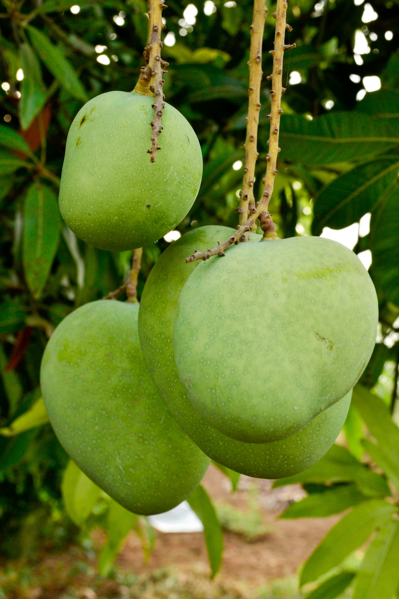

About Mangoes
Mangoes are a delicious tropical fruit known for their sweet and juicy flesh. They are widely popular and come in various varieties, each with its own unique flavor and texture. Mangoes can be enjoyed fresh, in smoothies, salads, or as a topping for desserts.
Steps to Grow Mangoes
- Choose a sunny location with well-draining soil.
- Plant a mango tree sapling or grow from a mango seed.
- Water the mango tree regularly, especially during the dry season.
- Fertilize the tree with a balanced fertilizer that includes micronutrients.
- Prune the tree to encourage a strong structure and remove dead branches.
- Protect the tree from pests and diseases through proper care and organic treatments.
- Harvest ripe mangoes when they have a sweet aroma and yield slightly to gentle pressure.
Extra Information
Mangoes are not only delicious but also rich in vitamins and minerals, including vitamin C, vitamin A, and potassium. They are a healthy addition to your diet and are often referred to as the "king of fruits" due to their popularity and nutritional value.